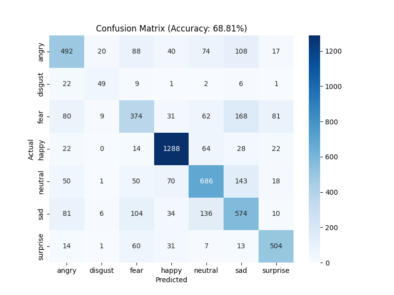

Emotion Recognition
Real-time facial expression classification, with local language-model integration for interpreting patterns over time.
Trained and evaluated a ResNet-50 classifier on seven expression categories, using OpenCV for video-based face detection and preprocessing. Integrated Mistral through Ollama for local analysis of prediction trends.
- Python
- ResNet-50
- OpenCV
- Ollama
68.81%Reported accuracy
07Expression classes
Model evaluationResNet-50 / Confusion matrix
